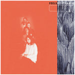

Quick Takes (February 2019)
Hello,
Welcome to our latest installment of Quick Takes. if you only clicked here to read our latest takedown on Weezer, then consider your wishes granted. However, I'd also encourage you to read our other fine reviews, all of of which feature albums that are much, much better. How about Girlpool's stellar third LP, which I wholeheartedly endorse? Or maybe Feels is more up your speed? Staff writer is back contributing with a pair of noise/experimental efforts, both of which are also worth a look. We also hope your Valentine's Day didn't suck.
What were your favorite albums during the month of February? Anything we didn't get to review that we should've? You can always reach us on Facebook, or on our official twitter page. Juan
...
Barnett+Coloccia
VLF
(SIGE Records)
I’m likely not the first to point this out— after listening to VLF, the latest LP from Barnett+Coloccia, I’m hoping the pair is commissioned to score a film. Purveyors of eerie, Faith Coloccia of Mamiffer and Oakeater’s Alex Barnett’s combination of stirring melody (Fountain of Youth), electro-noir (Confession), and dread-inductive composition (Bachelor’s Grove) creates narrative when there is none, a thread of unease that’s taunting and seductive. The sublime tension of Rain in Bilbao seeps into the machinery of Green Woman, a compelling and unsettling dichotomy of vocal grace and cold automation. For Copperworks and Ill Will, two of the most outwardly musical inclusions in VLF, the latter track seems to repeat some of Copperwork’s tonal stutter, building upon that anchor with intensifying drones and sprawling soundscapes that aim to conquer one another. [8/10] Sean Caldwell
Bellrope
You Must Relax
(Exile On Maintream)
There’s three and a half minutes of irritant-riddled screeching that introduces Bellrope’s You Must Relax, an endurance test titled Hollywood 2001/Rollrost. It’s tempting to discontinue listening after thirty seconds, but the track’s aimless dissonance is followed by four riff-burnt entries that evoke Electric Wizard’s penchant for pursuit of the unreachable muck-laden horizon (Old Overholt) and the limit testing calamitous sonic extremes of The Body (You Must Relax). Following the dissolution of The Black Shape of Nexus, Bellrope’s debut is a viscous and repetitive trip, its offerings set at trudge though built out ably via riff and weight. The excellent TD200, with vocal accompaniment from Arne Heesch and Yvonnne Ducksworth of Treedeon, capitalizes on tension building and a closing rush of guitar melody that carries the song for nearly eight minutes with sampled voices, distortion and drum fills generating a violent exit. The nearly 18-minute closer CBD/Hereinunder follows similar logic, attempting opus-level magnitude a la Sleep or even Neurosis while building toward its payoff. The track falters a tad, reaching the height of its powers a bit too early despite injecting some energy into its final act. [7/10] Sean Caldwell
Feels
Post Earth
(Wichita Recordings)
Feels' rambunctious debut sounded like a sleazy reimagining of early-eighties, Sunset Strip-informed rock n' roll. For their follow-up, Post Earth, the L.A.-based four-piece step away from their garage leanings in favor of a raw smattering of psych and post-punk sounds. Unpredictability is the very essence of their character-from the crunchy, bass-throbbing Sour to the frenetic, spoken-word Deconstructed, their erratic shifts in mood proffer a lively, unshackled statement. It's not that their debut's producer Ty Segall coaxed their abilities as songwriters, but behind his signature scuzz, you couldn't tell how they wanted to evolve. Anyways—where with its Sonic Youth-like dissonance and sustained tension—is the oddest out of a tracklist that in deliberately patchy in design. Feels' seething frustrations thrash with a clearer focus and no shortage of attitude. [7/10] Juan Edgardo Rodríguez
Girlpool
What Chaos is Imaginary
(Anti-)
Girlpool once expressed their dissent with a minimal setup of guitar and bass. It was effective, but also limited in scope, though their powerful protest in support of individuality and feminist rights revealed a maturity far beyond their early adulthood. Since then, the Los Angeles duo of Cleo Tucker and Harmony Tividad have taken their melodic grunge on a steady, more measured course. What Chaos is Imaginary is a meditation on departures both personal and physical— it sees them step into a new period in their lives that’s entangled in vulnerability and confusion. At times, the changes are unrecognizable— take Lucy’s, an airy, elegant ode to dream pop that introduces Cleo Tucker’s gravelly, lower vocal pitch (Tucker underwent hormone replacement therapy following the release of 2017’s Powerplant). Songs like All Blacked Out and Chemical Freeze are suffused with melancholic ambiance, where descending minor chords provide a fullness to their otherwise spare arrangements. Whereas on the ambitious title track, they add further gravitas to the proceedings with an epic, emotional scorcher laced with funereal strings and lush string arrangements. But it’s not just doom and gloom—the brisk waltz of Hire recalls Elliott Smith during his Dreamworks period. On What Chaos is Imaginary, Girlpool recognize that the chaos that surrounds them will only help them strengthen their resolve. [8/10] Juan Edgardo Rodríguez
 Julia Jacklin
Julia Jacklin
Crushing
(Polyvinyl)
Julia Jacklin’s dispirited confessionals aren’t a component you stumble upon in Crushing—they’re the very essence of her creative being. It’s common for artists to pour their soul into their work, and the Melbourne singer-songwriter is no exception. She’s forceful and direct, always honest to herself—there’s a difference between expressing hurt with lived-in sorrow rather than anecdotal observation, after all. That’s the potency behind Crushing’s stripped back songs, though sometimes to a fault. Jacklin’s wry cynicism can equally cause a cackle and a tear, trying to make sense of the heartbreak that overtook her alongside a quivering, contemplative voice akin to Sharon Van Etten's. She provokes an emotional groundswell in the quietest of moods, one acoustic song at a time. But the knotty, country rock groove of both Head Alone and You Were Right show that she can also shake off those doldrums. Maybe not as much as we’d like, but as she repeatedly denotes in Crushing, healing is an everyday process. [7/10] Juan Edgardo Rodríguez
 Tiny Ruins
Tiny Ruins
Olympic Girls
(Ba Da Bing!)
Hollie Fullbrook doesn’t just write folk songs. Fullbrook, the main songwriter behind Tiny Ruins, surrounds her ringing acoustic performances with carefully ornamented arrangements that amplify her otherwise intimate cadences. It made her 2014 release, Brightly Painted One, sound adventurous in scope, a far cry from the British folk influences she confidently echoed. She retraces her steps while moving forward in Olympic Girls, applying what she learned from Painted One while returning to the solemn, fingerpicked compositions of 2011's Some Were Meant for Sea. She cautiously layers haunting ambient textures into the title track and Sparklers, and for at least half of Ruins, she doesn't intend to overtop the simplicity of the acoustic guitar. But her ambitious sweep remains, as she applies lush dreamscapes to meandering ballads ("Fireworks") and mini prog-folk suites ("Kore Waits in the Underworld.") Fullbrook mottles sonic accouterments throughout with graceful finesse, though sometimes at the expense of songs that dissolve into a foggy blur. [7/10] Juan Edgardo Rodríguez
Weezer
Weezer (Black Album)
(Crush/Atlantic)
By now, Rivers Cuomo is well-aware that you’re constantly nagging the finger at him. He implicitly tells you to “die, die” on the Slightly Stoopid-resembling Zombie Bastards, after all, a joyful retort to the haters who won’t shut up about how Weezer has become a meme in musical form. But Cuomo, ever the mercurial songwriter, later goes off over the pleasures of parasailing on the escapist, Paul McCartney-recalling High as a Kite. And that’s when Weezer (Black Album) peaks. No guttural guitar chords or debauched, double-entendres on bondage here—instead, we get driving, metallic-tinged pop-rock songs like Too Many Thoughts in My Head and I Am Being Honest over some surprisingly sinister lyricism (slick as a lick production courtesy of TV on the Radio’s Dave Sitek). In that sense, it is quite dark! But when he’s not writing songs seeking approval from his kids’ classmate’s parents—at least from a surface level—Cuomo renews his Margaritaville membership on the effortless exotica of Byzantine. Cuomo shrugs as he jumps from one middle-aged errand to the next, hoping to plop back to his bed so he can go back to daydreaming about the Pacific. [5/10] Juan Edgardo Rodríguez
14 March, 2019 - 04:20 — No Ripcord Staff